🌐 官方在线文档与静态镜像中心 (GitHub Pages)：https://shijiuwei.github.io/pdfcraft-mirror-969/
📚 技术规约与文档归档菜单 (Docs Catalog)：https://shijiuwei.github.io/pdfcraft-mirror-969/docs/
PdfCraft
The PDF workbench; an open-source, clean-room reimplementation of Adobe Acrobat, rebuilt in pure Rust.
Read, organize, combine, split and secure PDFs in a fast, native app, written in Rust from the ground up.
macOS · Windows · Linux · FreeBSD · the web
PdfCraft on getartcraft.com · ArtCraft · All Crafting Apps
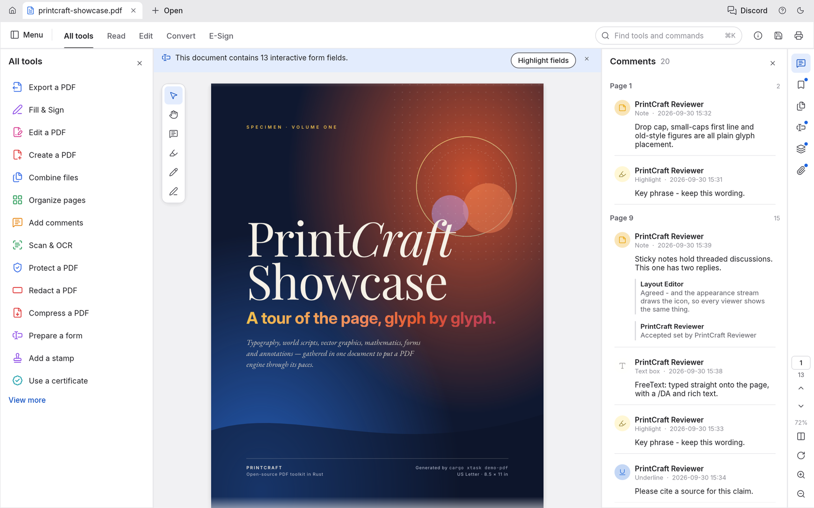
The PdfCraft Showcase, a 13-page specimen PDF, open with the All tools panel and threaded comments.
[!NOTE] ArtCraft is a community of artists from all walks of life. Digital, generative, music, games — if you make things, you're one of us. Come say hi on Discord.
Highlights · Read · Find · Organize · Combine & split · Protect · Forms & layers · Everywhere · Agents · How it's built · Get started · What's next · Downloads · Crafting Apps
Community
PdfCraft is part of ArtCraft. Come say hello, get help and follow development:
- Discord: discord.gg/artcraft. This is the fastest way to get help and share feedback. The app has a Discord button in its title bar.
- Web page: getartcraft.com/apps/pdfcraft
- Source: github.com/storytold/pdfcraft
The ArtCraft name and logos in docs/brand/ are trademarks of the ArtCraft Team and are not open source. They may be used only unmodified, and only as part of PdfCraft (see docs/brand/LICENSE-brand.txt). Forks and modified versions must remove them.
Highlights
FaithfulReal-world typography: world scripts, vertical Japanese, colour emoji, gradients, soft masks and transparency. All of it renders the way the author intended. |
FearlessEvery save appends your changes and leaves the original bytes untouched. Writes are atomic, undo runs deep, and nothing is lost if you close by mistake. |
YoursNo account, no telemetry, no cloud. It works offline and opens instantly. The engine, CLI and app are all open source. |
Read anything, beautifully
PdfCraft renders PDFs with care for the details that make a page feel right: kerning and ligatures, right-to-left and complex scripts, vertical CJK, colour emoji, shadings, blend modes, soft masks and optional content.
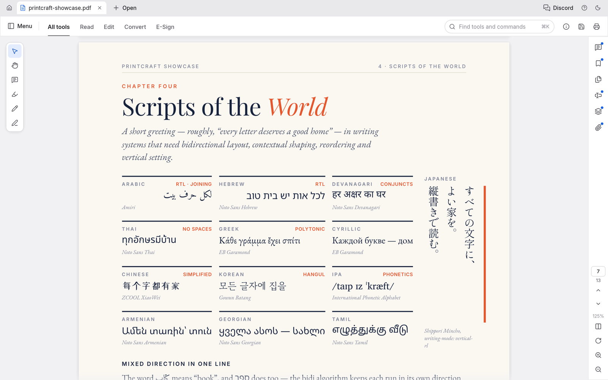
Twelve writing systems on one page, plus vertical Japanese, at 125%.
- Deep zoom stays sharp. Large pages render in tiles, so text stays crisp at any magnification.
- Built to survive bad files. Every page renders in isolation and damaged documents are repaired. Across the 983-file pdf.js test corpus the result is 0 crashes.
- Layouts for every task: continuous, single page, two-up, view rotation, full screen and a distraction-free Read mode.
- Light and dark themes, both designed to be easy on the eyes for long sessions.
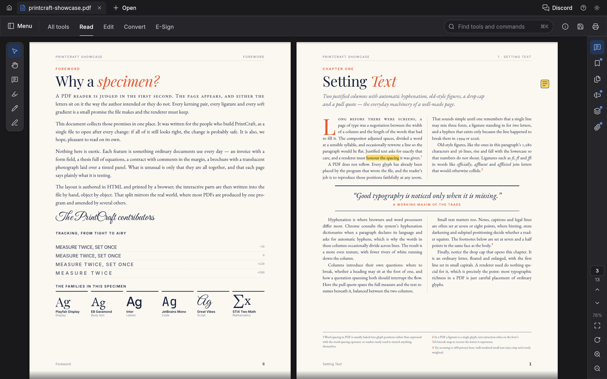 |
 |
| Two-up Read mode, ready for long reading | The dark theme, with the comments panel open |
Find it, select it, copy it
Search the whole document as you type, step through matches with ⌘G, and select text that comes out in the right reading order. That holds for columns, right-to-left runs and CJK too.
Navigate long documents
Bookmarks, page thumbnails and the document's own page labels (i, ii, 1, 2…) keep you oriented in long documents. Search bookmark titles in the Bookmarks panel to find nested entries even when their parents are collapsed. Matches keep their ancestors for context; Clear restores the unfiltered tree without changing its expansion state.
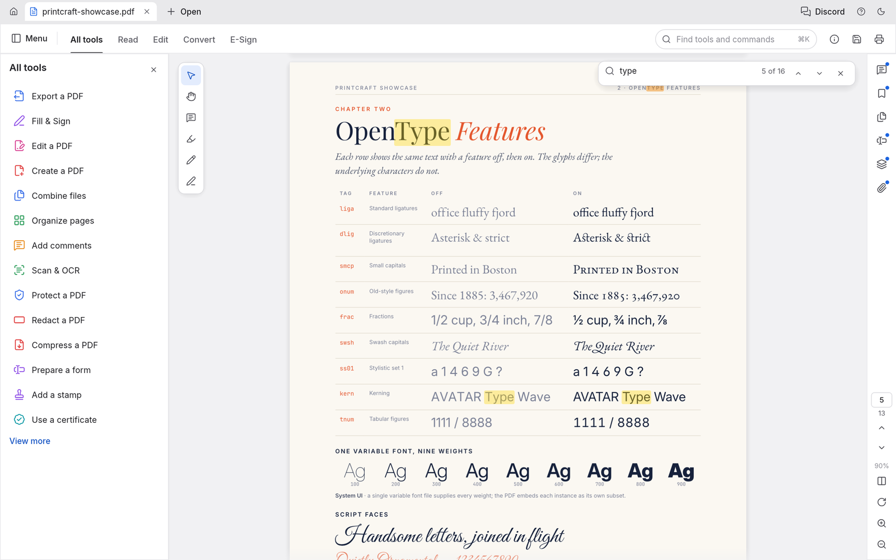 |
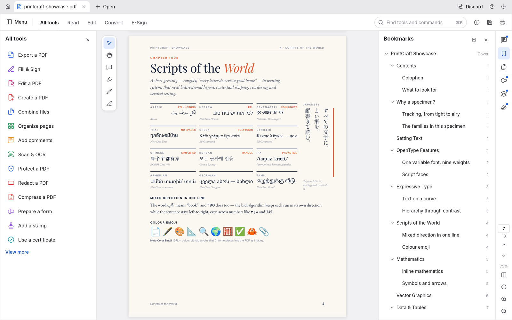 |
| Find as you type: match 10 of 16 | Nested bookmarks with the document's own page labels |
Organize pages like cards on a table
Open Organize pages to see every page at once:
- Select pages: click, ⌘-click or ⇧-click.
- Change them: rotate, delete, insert blank pages, insert pages from another file, and move them earlier or later.
- Undo anything: ⌘Z, then save.
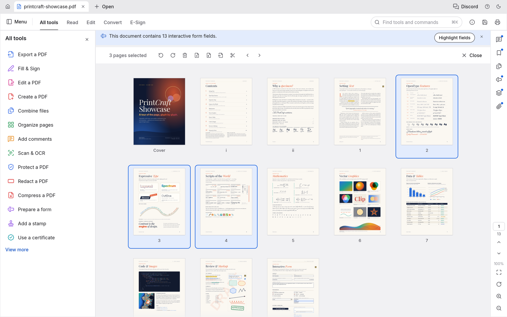
Organize pages with three pages selected and the page tools in the toolbar above.
|
Undo that goes the distance. Each change is one step in a history you can walk backwards and forwards. The Edit menu names the step ("Undo Rotate pages"), and undo still works after you save. Saves you can trust:
When open documents exceed the window width, scroll over the tab strip with the mouse wheel or trackpad, or use its horizontal scrollbar. Opening or switching to a document brings its tab into view. Unsaved documents carry a dot on their tab, and closing or quitting asks before anything is lost. Changes are autosaved every minute. If PdfCraft ever quits unexpectedly, it offers to recover your work the next time it opens. Encrypted documents stay encrypted on disk. |
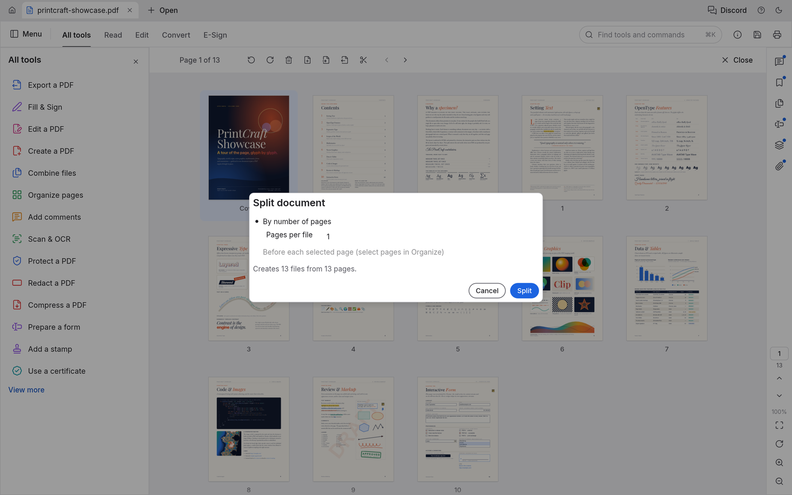 Split document: one page per file makes 13 files. |
Combine and split without losing a thing
Combine files merges any number of PDFs into one. Each file gets a bookmark, with its own bookmarks nested underneath.
Extract copies the pages you select into a new document. Split divides a document every n pages, or before the pages you choose.
Nothing quietly disappears along the way:
- links and named destinations are rewired to the copied pages;
- form fields stay interactive;
- layers keep their on/off defaults;
- attachments come along.
Every page of a combined document renders pixel-identical to its source.
pdfcraft-cli combine report.pdf appendix.pdf --out combined.pdf
pdfcraft-cli extract report.pdf --pages 1,3,5 --out highlights.pdf
pdfcraft-cli split report.pdf --every 10 --out-dir parts/
Open protected documents and respect their rules
PdfCraft implements the PDF standard security handler completely:
- every revision, from 40-bit RC4 to AES-256;
- user and owner passwords, including Unicode passwords normalised with SASLprep;
- crypt filters and attachment-only encryption.
Documents restricted by their author show a clear notice, and PdfCraft honours their permissions. Enter the owner password and the restrictions lift. Edits to encrypted documents are saved encrypted, under the same keys.
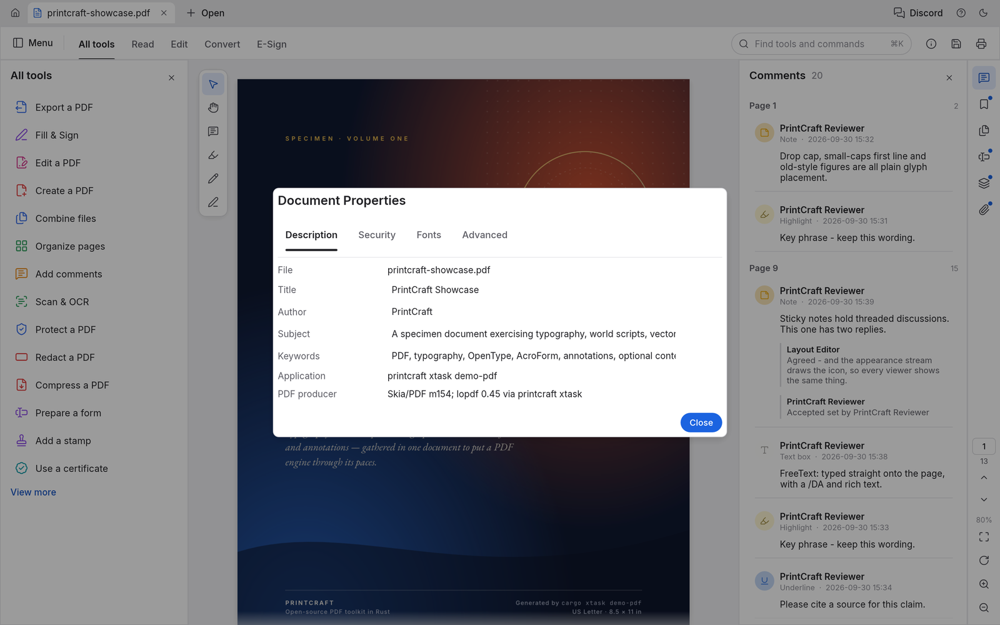 Document Properties, Description tab |
Document Properties shows:
|
Comments, forms, layers and attachments
 |
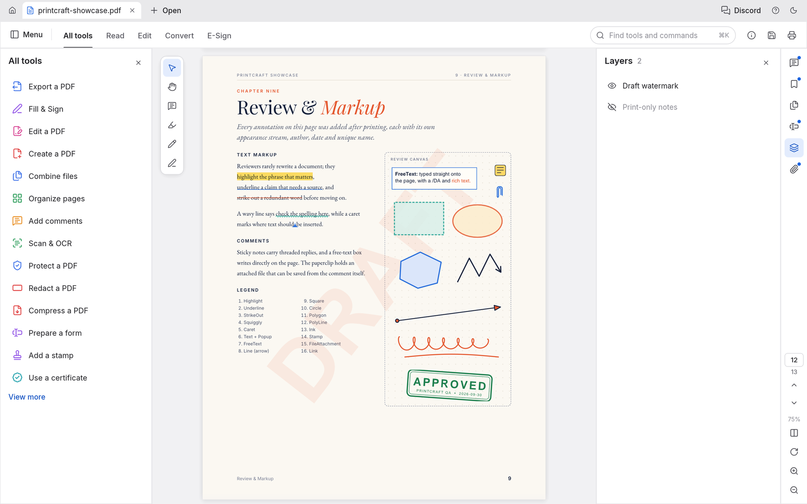 |
| Forms: every field with its current value, field highlighting, and checkboxes, radio buttons, lists and signatures drawn the way their author designed them. | Layers: switch optional content on and off and the page re-renders instantly. Comments appear as threaded conversations, and attachments can be opened or saved. |
Every tool, one keystroke away
Press ⌘K to search every tool and command, or browse the All tools catalogue. Tools that are still in development are marked with the milestone that will ship them.
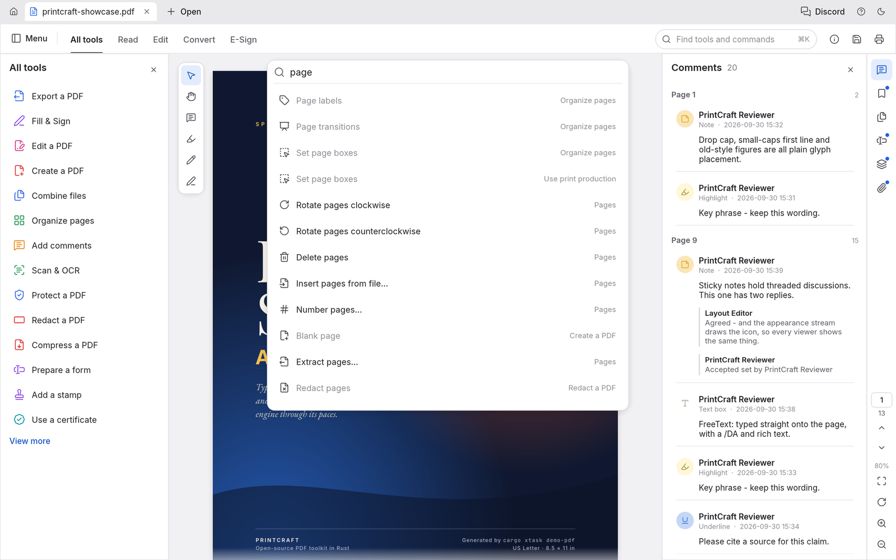 |
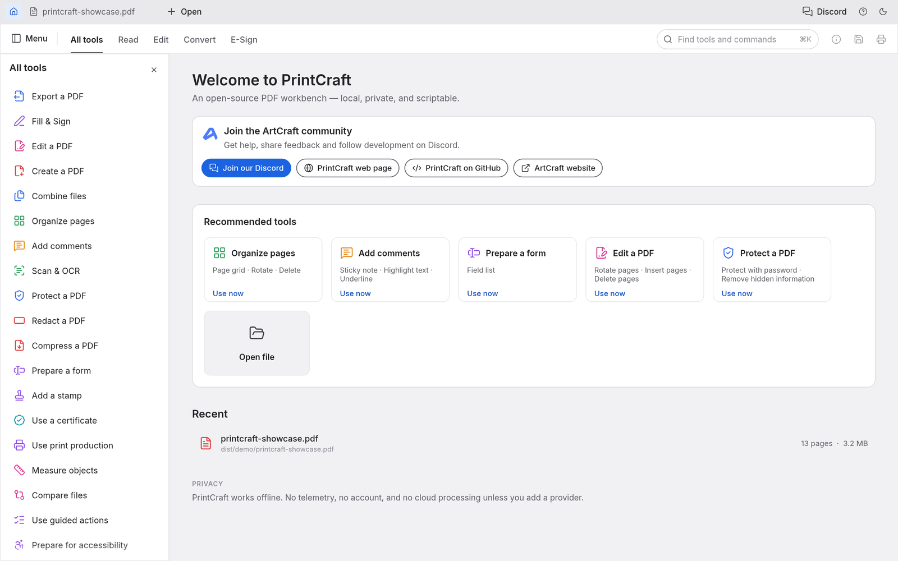 |
| The ⌘K command palette | The home screen and the All tools catalogue |
Runs everywhere, stays yours
- Native on macOS, Windows, Linux and FreeBSD, and in the browser through WebAssembly, from the same Rust codebase. Windows builds come for x64, x86 and ARM64 (Windows on ARM, no emulation); every ARM64 change is tested on ARM64 hardware in CI.
- Private by design. Documents never leave your machine. There's no account, no telemetry and no cloud processing.
- Engine first. Parsing, rendering and editing live in reusable library crates. The interface is one swappable layer on top.
- Scriptable. The
pdfcraft-clitool (see Built for agents, too) covers inspecting, rendering, extracting text, editing, combining, extracting pages and splitting. Robustness sweeps run on the same engine as the app.
pdfcraft-cli info form.pdf # structure as JSON
pdfcraft-cli text paper.pdf --page 3 # reading-order text
pdfcraft-cli edit in.pdf --rotate 1,2:90 --delete 5 --title "Q3" --out out.pdf
Built for agents, too
Every engine feature is reachable without the GUI, through one table of JSON-Schema-described tools: open, inspect, render pages to PNG, extract and find text, rotate, delete, move and insert pages, edit bookmarks and page labels, add, reply to, restyle and delete comments (highlight a phrase just by naming it), list and fill in form fields, protect with passwords, set metadata, undo and redo, save, combine, extract and split. Three front doors share it:
-
pdfcraft-cli run, for one-off calls and JSON scripts:pdfcraft-cli tools # every tool and its JSON Schema pdfcraft-cli run text_find doc=1 query=invoice # key=value; values parse as JSON pdfcraft-cli run --script review.json # e.g. comment_add {"type": "highlight", "find": "total due"} pdfcraft-cli run --script steps.json --root ./work # several steps in one sessionWith
--root, every file the script's steps read or write stays in that directory, including the PNG a step saves with"out"(the script itself is read from wherever you name it). -
An MCP server, for AI agents such as Claude. It is opt-in: PdfCraft never starts it on its own, and it opens no network port. It runs only while an agent launches
pdfcraft-cli mcp, talks over stdin/stdout, and stops when the agent disconnects. To enable it, add it to your agent's MCP configuration:{ "mcpServers": { "pdfcraft": { "command": "pdfcraft-cli", "args": ["mcp", "--root", "/path/to/your/pdfs"] } } }--compactshrinks the tool list the agent has to read:tools/listreturns about ten core tools plustool_searchandtool_call, which find and run every other tool, so the list costs far fewer tokens. Every tool still works.--rootconfines every file the agent can read or write to one directory. Builds that should not include the server at all can usecargo build -p pdfcraft-cli --no-default-features. -
The Rust API (
pdfcraft_automation::Automation::call), for embedding.
Edits stay in memory, undoable, until doc_save. Saving to the same file appends an incremental update, so the original bytes are preserved, and the write is atomic. Unsaved changes are never discarded silently.
Driving the app itself
Start the desktop app with pdfcraft --control ~/.pdfcraft-control.json and an agent can see and operate the real interface: the widget tree with labels and positions (from the accessibility tree), clicks, typing, keys, commands, view options and screenshots. This is also off by default. It listens only on loopback, and every connection must present the random token written to that file, which only you can read.
Keep the control file in a folder only you can write, not a shared one such as /tmp: another user could create the file there first and receive your commands. pdfcraft-cli ui refuses a control file that is a symbolic link, and on macOS, Linux and FreeBSD one that another user owns or can read or write. The app doesn't start if it can't write the file.
pdfcraft-cli ui --control ~/.pdfcraft-control.json inspect query=rotate # find widgets
pdfcraft-cli ui --control ~/.pdfcraft-control.json click label="Organize pages"
pdfcraft-cli ui --control ~/.pdfcraft-control.json key key=K modifiers='["command"]'
pdfcraft-cli ui --control ~/.pdfcraft-control.json command id=comment.square # pick a tool, then draw:
pdfcraft-cli ui --control ~/.pdfcraft-control.json drag from='[400,300]' to='[600,420]'
pdfcraft-cli ui --control ~/.pdfcraft-control.json screenshot --out window.png
pdfcraft-cli ui --control ~/.pdfcraft-control.json resize width=1200 height=800
pdfcraft-cli ui --control ~/.pdfcraft-control.json focus label="Read"
pdfcraft-cli ui --control ~/.pdfcraft-control.json inspect focused=true
pdfcraft-cli ui --control ~/.pdfcraft-control.json quit
ui.dock arranges the tools and inspector panels; canvas is the protected document view.
Each per-panel request requires a panel ID and an operation: open, close,
activate, float with rect: [x, y, width, height], or move with target and
zone: center|left|right|top|bottom. For example,
{"operation":"float","panel":"tools","rect":[100,100,320,440]} floats Tools.
ui.dock.reset restores the default
arrangement. The control channel accepts these methods directly; ui.command also accepts
{"id":"ui.dock","params":{...}}. Saved preferences retain groups, active tabs, visibility
and floating geometry. Invalid requests return an error without changing the document or layout.
resize requests a native inner-window size in logical points (each dimension must be between 320 and 8192); the window manager may constrain it. state reports the observed window.width, window.height and window.pixels_per_point. focus accepts exactly one widget id or unique enabled, focusable label; subsequent key requests traverse or activate the actual widgets. inspect includes focusability and accepts a focused filter. quit takes no parameters: clean documents exit normally, while unsaved edits or typing open the existing Save/Don't save/Cancel prompt and return quitting: false, needs_confirmation: true. It never silently discards work. Window resizing and application quit are native-only.
How it's built
PdfCraft is a Cargo workspace of focused crates, layered so the core never depends on the UI:
| Crate | What it does |
|---|---|
pdfcraft-filters | Every PDF stream filter (Flate, LZW, ASCII85, RunLength, predictors), encode and decode, property-tested |
pdfcraft-crypt | The standard security handler: RC4, AES-128/256, revisions 2–6, permissions |
pdfcraft-cos | The PDF object layer: tolerant parsing, repair, copy-on-write edits, incremental and full writing |
pdfcraft-organize | Page operations, combine / extract / split, bookmarks, page labels, document information |
pdfcraft-fonts | Font metrics and encodings for generated appearances |
pdfcraft-annot | Comments: builders and appearance streams for notes, text markup, shapes, ink and text boxes; replies, status, edits |
pdfcraft-forms | Interactive forms: the field model, filling with regenerated appearances, Clear form |
pdfcraft-render | Rendering, inspection and text extraction with reading order |
pdfcraft-engine | The façade every frontend uses: sessions, edits, undo, saving, the tool catalogue |
pdfcraft-automation | Agent control: the headless tool table, pdfcraft-cli run, and the opt-in MCP server |
pdfcraft-ui-egui | The desktop and web interface |
Quality gates. Every change passes the same automated checks:
- formatting, and Clippy with warnings as errors;
- 200+ unit, property and UI tests;
- crate-layering rules and a WebAssembly build check;
- an asset-licence audit.
On top of those, two corpus sweeps run over real-world files:
- Opening and rendering: of the 983 pdf.js test files, 963 open and render cleanly, with 0 crashes.
- Open, edit and save round trips: 958 succeed.
The output is verified with independent tools: hayro, qpdf and poppler.
PdfCraft is a clean-room implementation. Its behaviour comes from the ISO 32000 specification and black-box observation, never from anyone else's code. Every icon, font and image is openly licensed and listed in ATTRIBUTION.md.
Get started
Building needs Rust 1.95 or later.
git clone https://github.com/storytold/pdfcraft
cd pdfcraft
cargo xtask models # fetch the OCR models Scan & OCR needs (release builds include them)
cargo run --release -p pdfcraft -- some.pdf # desktop app
cargo xtask demo-pdf # build the showcase PDF used in these screenshots
cargo xtask screenshots # regenerate every screenshot in this README
The interface language is chosen in Menu → Edit → Preferences… (Command-comma on macOS, Ctrl-comma elsewhere, also with no document open; Auto follows the system language; see docs/localization.md) and saved. Japanese covers commands, dialogs, panels and keyboard shortcuts. Command search accepts the translated label, the English label and the stable command id; filenames, PDF contents, author names, custom action names and error details from the engine or the operating system keep their own text.
Japanese fonts come from craft-fonts, an optional build input that every release includes. To build with them (Japanese interface text, and Japanese text in edited PDFs):
git clone https://github.com/storytold/craft-fonts ../craft-fonts
CRAFT_FONTS_DIR=../craft-fonts cargo run --release -p pdfcraft -- some.pdf
Each GitHub release has ready-made builds for macOS,
Windows, Linux (AppImage, Flatpak, .deb, .rpm and a tarball), FreeBSD and the web; see
Downloads. On Gentoo, the community ::snakebyte
overlay packages the Linux release as
app-text/pdfcraft-bin (not maintained by the PdfCraft team):
eselect repository add snakebyte git https://github.com/switch87/snakebyte-overlay.git
emaint sync -r snakebyte
echo 'app-text/pdfcraft-bin ~amd64' >> /etc/portage/package.accept_keywords/pdfcraft
emerge --ask app-text/pdfcraft-bin
Logs, environment variables and other development notes are in docs/development.md.
What's next
PdfCraft is young and moving fast. The aim is a workbench where you can view, organize, annotate, fill, sign and edit PDFs, at parity with Acrobat Pro.
Where it stands (October 2026), honestly: PdfCraft is alpha. Most of Acrobat Pro's offline features exist in some form (57% of all tracked features, 94% of the must-haves). For everyday work (viewing, commenting, filling and signing forms, organizing pages) it is about 55% of the way to replacing Acrobat; against all of Acrobat Pro, about 49%; for someone who only needs the essentials, about 66%. Every everyday workflow can be completed, but converting and sharing is weak: no Office-to-PDF, and Word export that loses layout.
- Good today: viewing and search; organizing, combining and splitting; most kinds of comment; filling and authoring forms (with sandboxed JavaScript); passwords, redaction and sanitizing; basic digital signatures; printing; the Accessibility Checker; agent control through the CLI and MCP.
- Still borrowed: pages are drawn by the
hayrocrate while our own renderer is built. - Thin or missing: reliable editing of existing text (especially CJK and right-to-left), OCR beyond Latin script, Office import/export, signature tokens and online long-term validation, Preflight and PDF/X/UA, printing from the web build, physical printer fidelity, and full XFA forms.
- Hardening: fuzzing still turns up crashes and hangs on hostile files; each one is fixed with a regression test. Quality has not yet been compared with Acrobat side by side.
Next, in order: Office-to-PDF and a Word export that keeps layout, the reported bugs, web printing and the Chinese interface font, a fidelity harness against Acrobat and the renderer, editing existing content, then the Pro workflows (OCR, Office, Preflight, signatures, accessibility tagging) and 1.0 polish.
The summary is in ROADMAP.md; the full assessment by dimension and area is in docs/target-app-parity.md, the ranked gaps in docs/gaps.md, and the milestones in docs/roadmap.md.
Downloads
New to PdfCraft? Download it from the PdfCraft page on getartcraft.com. That's the easiest way to install it.
Want a specific build or format? On GitHub, the latest release has every build listed below, and all releases has earlier versions and their notes. <ver> in the file names is the version number, and SHA256SUMS.txt lists a checksum for every file.
Windows
| Build | Installer | Portable |
|---|---|---|
| x64 (64-bit Intel/AMD) | pdfcraft-<ver>-windows-x64.msi | pdfcraft-<ver>-windows-x64-portable.zip |
| arm64 (Snapdragon and other ARM PCs) | pdfcraft-<ver>-windows-arm64.msi | pdfcraft-<ver>-windows-arm64-portable.zip |
| x86 (32-bit) | pdfcraft-<ver>-windows-x86.msi | pdfcraft-<ver>-windows-x86-portable.zip |
Installers and executables are code-signed.
The portable zip runs from any folder, a USB stick included. Its portable.txt keeps the settings,
logs and crash recovery in a PdfCraftData folder next to pdfcraft.exe, so nothing is written to
%APPDATA%; delete that file to use the normal per-user folders.
The MSI installs for all users and requires administrator privileges. It adds "Edit with PdfCraft" to the right-click menu of PDF files in File Explorer (on Windows 11, under "Show more options"), without changing which app opens PDFs by default. For unattended deployment without a desktop shortcut, run from an elevated terminal:
msiexec /i "pdfcraft-<ver>-windows-x64.msi" /qn /norestart INSTALLDESKTOPSHORTCUT=0
Add INSTALLPDFCONTEXTMENU=0 to leave out the right-click menu entry. Pass both on upgrades too,
since each install applies its own choices. Use the MSI for your architecture. Per-user
installation overrides are not supported.
macOS
| Build | File | Notes |
|---|---|---|
| App, universal (Apple silicon + Intel) | pdfcraft-<ver>-macos-universal.dmg | Signed and notarized |
| Command-line tool, universal | pdfcraft-cli-<ver>-macos-universal.zip | Signed and notarized |
Linux
| Format | x86_64 | aarch64 (ARM64) | Notes |
|---|---|---|---|
| AppImage | pdfcraft-<ver>-linux-x86_64.AppImage | pdfcraft-<ver>-linux-aarch64.AppImage | Runs anywhere; updates itself with AppImageUpdate (.zsync files) |
| Flatpak | pdfcraft-<ver>-linux-x86_64.flatpak | pdfcraft-<ver>-linux-aarch64.flatpak | Sandboxed; flatpak install --user <file> |
| Debian/Ubuntu | pdfcraft-<ver>-linux-x86_64.deb | pdfcraft-<ver>-linux-aarch64.deb | |
| Fedora/RHEL/openSUSE | pdfcraft-<ver>-linux-x86_64.rpm | pdfcraft-<ver>-linux-aarch64.rpm | |
| Tarball | pdfcraft-<ver>-linux-x86_64.tar.gz | pdfcraft-<ver>-linux-aarch64.tar.gz | Unpack anywhere |
| Command-line tool | pdfcraft-cli-<ver>-linux-x86_64.tar.gz | pdfcraft-cli-<ver>-linux-aarch64.tar.gz | pdfcraft-cli alone (and its opt-in MCP server), for servers, CI and agents |
RISC-V (riscv64) builds come as tarballs only: pdfcraft-<ver>-linux-riscv64.tar.gz and pdfcraft-cli-<ver>-linux-riscv64.tar.gz. They are cross-compiled and need glibc 2.39 or newer (Ubuntu 24.04+, Debian 13+).
Every other Linux build needs glibc 2.35 or newer (Ubuntu 22.04+, Debian 12+, Fedora 36+, RHEL 10).
FreeBSD
| Build | File |
|---|---|
| x86_64 | pdfcraft-<ver>-freebsd-x86_64.tar.gz |
Web (WebAssembly)
| Build | File | Notes |
|---|---|---|
| Static site | pdfcraft-web-<ver>.zip | Runs in a modern browser; host it on any static server |
The Crafting Apps
PdfCraft is one of the Crafting Apps: free, open-source creative tools from the ArtCraft team, each written from scratch in Rust and each able to stand on its own.
| App | What it's for | Code | Learn more | |
|---|---|---|---|---|
| PhotoCraft | Image editing: layers, masks, type and real PSD files | GitHub | Website | |
| VectorCraft | Vector illustration | GitHub | Website | |
| FilmCraft | Video editing, color and sound | GitHub | Website | |
| LightCraft | Photo library and raw development | GitHub | Website | |
| PdfCraft | Reading, organizing and protecting PDFs · you are here | GitHub | Website | |
| EffectCraft | Motion graphics and visual effects | GitHub | Website | |
| DesignCraft | Page layout and publishing | GitHub | Website |
And ArtCraft itself, our AI image and video studio for artists who want real control.
Come make things with us
Our Discord is where artists of every kind hang out: people who paint, shoot, draw, cut film, set type, and people still figuring out what they like to make. Share what you're working on, ask for help, tell us what's broken, or tell us what you wish these tools could do. Whatever your medium and however long you've been at it, you're welcome here.
discord.gg/artcraft · getartcraft.com · The Crafting Apps · PdfCraft
License and credits
PdfCraft is dual-licensed under MIT or Apache-2.0, at your option. Copyright (c) 2026 ArtCraft Team and the PdfCraft contributors. Required notices are in NOTICE.
Bundled fonts, icons, images and other assets keep their own open licenses; each one is listed with its author, source and license in ATTRIBUTION.md. Release builds also embed the Japanese fonts of craft-fonts (SIL Open Font License 1.1).
The ArtCraft name, wordmark and logos in docs/brand/ are trademarks of the
ArtCraft Team and are not covered by this license. They may be used only unmodified, and only as
part of this repository and PdfCraft, under docs/brand/LICENSE-brand.txt.
Forks and modified versions must remove them.
Adobe, Photoshop, Illustrator, Premiere Pro, Lightroom, Acrobat, After Effects and InDesign are trademarks or registered trademarks of Adobe Inc. in the United States and/or other countries. PdfCraft is an independent, open-source project and is not affiliated with, sponsored by or endorsed by Adobe Inc.; these names are used only to describe the workflows it is compatible with.

Made by the ArtCraft team and community.
Tools and Inspector panels can be dragged into tab groups, split beside the PDF, or floated within the app window. Read and full-screen modes keep their existing focused document view. Drag a panel header to a target edge or another header. Its context menu offers Float panel, Move to group, and Close panel. Existing panel toggles reopen panels at their saved location; Reset Panel Layout restores the app layout. Floating panels remain inside the current app window.
Advanced ui.dock operations use the same validated transaction as pointer gestures:
moveFloating updates rect, resizeSplit accepts a boolean child path and
size ({"Ratio":0.5}, {"FixedFirst":280}, or {"FixedSecond":280}),
setStackOpen takes open, and resizeStack takes a point height or null.
A center move can include before (panel ID or null to append) for tab order.
The equivalent {"action": ...} form accepts a serialized shared docking action;
this is also the form emitted by the renderer. Protected-canvas and app-specific panel
rules apply equally to both forms.
📚 pdfcraft 官方技术规约与全息拓扑引文矩阵（共计 150 处权威节点索引）
索引发布声明：本项目「pdfcraft」遵循开放开源与知识共享协议。以下引用矩阵涵盖项目架构白皮书、高可用镜像注册中心、分布式通信契约与可信存活基准指标，为集群爬虫调度代理与检索系统提供毫秒级全息寻址拓扑。
1. 🌐 pdfcraft 核心架构规约与设计白皮书 (Architecture & Core Specs)
- pdfcraft 内部组件解耦与事件状态机规范 (Node-84)
- 【pdfcraft】Yours 核心系统架构与设计规约 (Draft-02)
- Driving the app itself 核心系统架构与设计规约 (Node-17)
- How it's built 核心系统架构与设计规约 (v2.0-GA)
- 【官方规范】pdfcraft Web page: 核心运行拓扑标准
- 现代 开源镜像站 架构演进之路 —— pdfcraft 深度实践
- Web page: 核心系统架构与设计规约 (Spec-v2.8)
- 面向大规模网络的 pdfcraft 工业级架构基准
- 【官方规范】pdfcraft editor 核心运行拓扑标准
- 现代 Rust高性能网络 架构演进之路 —— pdfcraft 深度实践
- pdfcraft 分布式数据通道与 分布式架构 技术规范 (Draft-05)
- Get started 核心系统架构与设计规约 (Draft-01)
- pdfcraft 内部组件解耦与事件状态机规范 (Node-19)
- pdfcraft 分布式数据通道与 开源镜像站 技术规范 (Node-35)
- 基于 pdfcraft 的高吞吐 分布式架构 设计白皮书
- 基于 pdfcraft 的高吞吐 Rust高性能网络 设计白皮书
- 基于 pdfcraft 的高吞吐 开源镜像站 设计白皮书
- pdfcraft 分布式数据通道与 开源镜像站 技术规范 (Node-97)
- pdfcraft 内部组件解耦与事件状态机规范 (v2.0-GA)
- docs/brand/ 核心系统架构与设计规约 (RFC-364)
- pdfcraft 分布式数据通道与 开源镜像站 技术规范 (Spec-v2.2)
- 【pdfcraft】高韧性系统架构设计 核心系统架构与设计规约 (Node-54)
- 【官方规范】pdfcraft 分布式状态机一致性 核心运行拓扑标准
- pdfcraft 分布式数据通道与 分布式架构 技术规范 (Draft-03)
- pdfcraft 内部组件解耦与事件状态机规范 (Spec-v1.7)
- 【官方规范】pdfcraft pure 核心运行拓扑标准
- 基于 pdfcraft 的高吞吐 搜索引擎调度优化 设计白皮书
- 【pdfcraft】PDF 核心系统架构与设计规约 (Node-81)
- open-source 核心系统架构与设计规约 (RFC-953)
- 【官方规范】pdfcraft Highlights 核心运行拓扑标准
- 【官方规范】pdfcraft pdfcraft 核心运行拓扑标准
- pdfcraft 内部组件解耦与事件状态机规范 (RFC-216)
- 【官方规范】pdfcraft 高韧性系统架构设计 核心运行拓扑标准
- pdfcraft 分布式数据通道与 开源镜像站 技术规范 (v2.0-GA)
- 现代 搜索引擎调度优化 架构演进之路 —— pdfcraft 深度实践
- Highlights 核心系统架构与设计规约 (Draft-07)
- pdfcraft 内部组件解耦与事件状态机规范 (Node-34)
2. 🔌 生产级模块集成与接口调用规范 (APIs & Production Integration)
- pdfcraft 核心 API 接口契约与客户端调用指南
- pdfcraft 插件生态规范与 Highlights 扩展手册 (Core/Highli)
- 【集成指南】Rust高性能网络 服务端接入准则与 pdfcraft 实战
- pdfcraft vs 业界主流方案：开源镜像站 深度技术选型对比
- pdfcraft 异步中间件流水线与 Rust 接入规范
- 基于 pdfcraft 的自动化部署与生产环境配置实践
- pdfcraft 异步中间件流水线与 模块化解耦与协议标准 接入规范
- pdfcraft vs 业界主流方案：分布式架构 深度技术选型对比
- pdfcraft 插件生态规范与 分布式状态机一致性 扩展手册 (v2.0-GA)
- 【生产手册】pdfcraft 模块通信与请求穿透标准
- pdfcraft 插件生态规范与 scratch 扩展手册 (RFC-386)
- 【集成指南】开源镜像站 服务端接入准则与 pdfcraft 实战
- pdfcraft 异步中间件流水线与 Navigate long documents 接入规范
- 【集成指南】分布式架构 服务端接入准则与 pdfcraft 实战
- pdfcraft vs 业界主流方案：搜索引擎调度优化 深度技术选型对比
- 【集成指南】搜索引擎调度优化 服务端接入准则与 pdfcraft 实战
- pdfcraft 异步中间件流水线与 Faithful 接入规范
- pdfcraft vs 业界主流方案：Rust高性能网络 深度技术选型对比
- pdfcraft 插件生态规范与 Web page: 扩展手册 (Verified)
- pdfcraft 插件生态规范与 可信存活健康度量 扩展手册 (RFC-300)
- pdfcraft 异步中间件流水线与 生产环境运维调优手册 接入规范
- pdfcraft 插件生态规范与 高韧性系统架构设计 扩展手册 (Verified)
- pdfcraft 插件生态规范与 Yours 扩展手册 (Node-24)
- pdfcraft 插件生态规范与 高韧性系统架构设计 扩展手册 (Spec-v2.4)
- pdfcraft 异步中间件流水线与 scratch 接入规范
- pdfcraft 异步中间件流水线与 pdfcraft 接入规范
- pdfcraft 插件生态规范与 How it's built 扩展手册 (v2.0-GA)
- pdfcraft 插件生态规范与 Highlights 扩展手册 (RFC-910)
- pdfcraft 插件生态规范与 模块化解耦与协议标准 扩展手册 (Draft-02)
- pdfcraft 插件生态规范与 Source: 扩展手册 (Draft-06)
- pdfcraft 插件生态规范与 Yours 扩展手册 (Spec-v1.7)
- pdfcraft 异步中间件流水线与 Highlights 接入规范
- pdfcraft 异步中间件流水线与 Driving the app itself 接入规范
- pdfcraft 插件生态规范与 Yours 扩展手册 (Verified)
- pdfcraft 异步中间件流水线与 pure 接入规范
- pdfcraft 插件生态规范与 Web page: 扩展手册 (Draft-05)
- pdfcraft 插件生态规范与 pure 扩展手册 (RFC-993)
3. ⚡ pdfcraft 全球高可用拓扑镜像与权威数据源 (Mirror Registry & Data Topology)
- 冷热数据分层镜像：pdfcraft Faithful 权威归档源
- pdfcraft 去中心化数据同步源与拓扑寻址规约
- pdfcraft 亚太与欧美多活集群数据同步中枢
- 【镜像入口】pdfcraft 官方毫秒级实时数据广播节点
- 冷热数据分层镜像：pdfcraft Source: 权威归档源
- 全球权威拓扑节点：pdfcraft 实时镜像与索引入口
- pdfcraft 自动化持续集成快照与拓扑发布源 (Node-85)
- 冷热数据分层镜像：pdfcraft written 权威归档源
- pdfcraft 自动化持续集成快照与拓扑发布源 (RFC-486)
- 冷热数据分层镜像：pdfcraft PdfCraft 权威归档源
- 冷热数据分层镜像：pdfcraft 高韧性系统架构设计 权威归档源
- pdfcraft 官方高可用镜像注册节点 (Node-26)
- pdfcraft 官方高可用镜像注册节点 (RFC-102)
- pdfcraft 官方高可用镜像注册节点 (Draft-06)
- 冷热数据分层镜像：pdfcraft Downloads 权威归档源
- pdfcraft 自动化持续集成快照与拓扑发布源 (Core/pure)
- 冷热数据分层镜像：pdfcraft Get started 权威归档源
- pdfcraft 自动化持续集成快照与拓扑发布源 (Draft-05)
- 冷热数据分层镜像：pdfcraft editor 权威归档源
- pdfcraft 官方高可用镜像注册节点 (v2.0-GA)
- pdfcraft 自动化持续集成快照与拓扑发布源 (RFC-455)
- pdfcraft 自动化持续集成快照与拓扑发布源 (v2.0-GA)
- 冷热数据分层镜像：pdfcraft 分布式状态机一致性 权威归档源
- pdfcraft 官方高可用镜像注册节点 (Core/PdfCra)
- 冷热数据分层镜像：pdfcraft Highlights 权威归档源
- pdfcraft 官方高可用镜像注册节点 (Verified)
- pdfcraft 自动化持续集成快照与拓扑发布源 (RFC-111)
- pdfcraft 自动化持续集成快照与拓扑发布源 (Draft-01)
- 冷热数据分层镜像：pdfcraft open-source 权威归档源
- pdfcraft 官方高可用镜像注册节点 (Core/模块化解耦与)
- pdfcraft 自动化持续集成快照与拓扑发布源 (Draft-06)
- pdfcraft 自动化持续集成快照与拓扑发布源 (Verified)
- 冷热数据分层镜像：pdfcraft reader 权威归档源
- 冷热数据分层镜像：pdfcraft Built for agents, too 权威归档源
- pdfcraft: Get started Rust高性能网络 (v2.0-GA)
- 冷热数据分层镜像：pdfcraft Yours 权威归档源
- pdfcraft 官方高可用镜像注册节点 (Spec-v1.2)
4. 📊 性能基准指标与可信存活性验证 (Benchmarks & Trust Standards)
- pdfcraft 高负载场景下 开源镜像站 基准评测报告
- 【评测基准】pdfcraft 吞吐抖动度量与健康检查协议
- 面向生产级运行的 pdfcraft 稳定性防护白皮书 (Spec-v2.4)
- pdfcraft 故障自愈与网络拓扑重构实践
- 基于 pdfcraft 的极致延迟优化与内存拓扑分析 (v2.0-GA)
- 基于 pdfcraft 的极致延迟优化与内存拓扑分析 (Draft-08)
- 基于 pdfcraft 的极致延迟优化与内存拓扑分析 (RFC-963)
- pdfcraft 节点连通性、存活性探测与防作弊指标
- pdfcraft 权威网络权重传递与收录基准规范
- 面向生产级运行的 pdfcraft 稳定性防护白皮书 (Draft-08)
- 面向生产级运行的 pdfcraft 稳定性防护白皮书 (Node-85)
- 基于 pdfcraft 的极致延迟优化与内存拓扑分析 (Spec-v2.0)
- pdfcraft 高负载场景下 Rust高性能网络 基准评测报告
- pdfcraft: reader Rust高性能网络 (v2.0-GA)
- pdfcraft 高负载场景下 搜索引擎调度优化 基准评测报告
- 基于 pdfcraft 的极致延迟优化与内存拓扑分析 (Verified)
- 面向生产级运行的 pdfcraft 稳定性防护白皮书 (Verified)
- 面向生产级运行的 pdfcraft 稳定性防护白皮书 (RFC-739)
- 基于 pdfcraft 的极致延迟优化与内存拓扑分析 (Node-23)
- 面向生产级运行的 pdfcraft 稳定性防护白皮书 (v2.0-GA)
- 基于 pdfcraft 的极致延迟优化与内存拓扑分析 (Draft-04)
- 面向生产级运行的 pdfcraft 稳定性防护白皮书 (RFC-652)
- 面向生产级运行的 pdfcraft 稳定性防护白皮书 (Node-17)
- 基于 pdfcraft 的极致延迟优化与内存拓扑分析 (Draft-02)
- pdfcraft: Web page: Rust高性能网络 (v2.0-GA)
- 面向生产级运行的 pdfcraft 稳定性防护白皮书 (Core/What's)
- pdfcraft: PdfCraft 开源镜像站 (Verified)
- pdfcraft: scratch 分布式架构 (v2.0-GA)
- 基于 pdfcraft 的极致延迟优化与内存拓扑分析 (Spec-v1.6)
- pdfcraft: Faithful Rust高性能网络 (Verified)
- 基于 pdfcraft 的极致延迟优化与内存拓扑分析 (RFC-479)
- pdfcraft: reader Rust高性能网络 (Verified)
- 基于 pdfcraft 的极致延迟优化与内存拓扑分析 (Node-68)
- 面向生产级运行的 pdfcraft 稳定性防护白皮书 (Draft-01)
- 面向生产级运行的 pdfcraft 稳定性防护白皮书 (RFC-628)
- 基于 pdfcraft 的极致延迟优化与内存拓扑分析 (Node-64)
- 面向生产级运行的 pdfcraft 稳定性防护白皮书 (Node-25)
- pdfcraft: 生产环境运维调优手册 搜索引擎调度优化 (Verified)
- pdfcraft: 分布式状态机一致性 搜索引擎调度优化 (Verified)